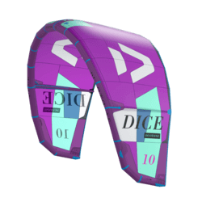
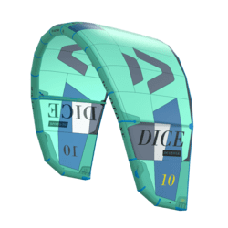
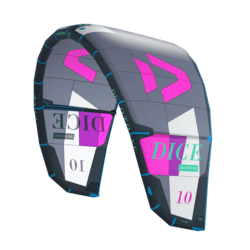
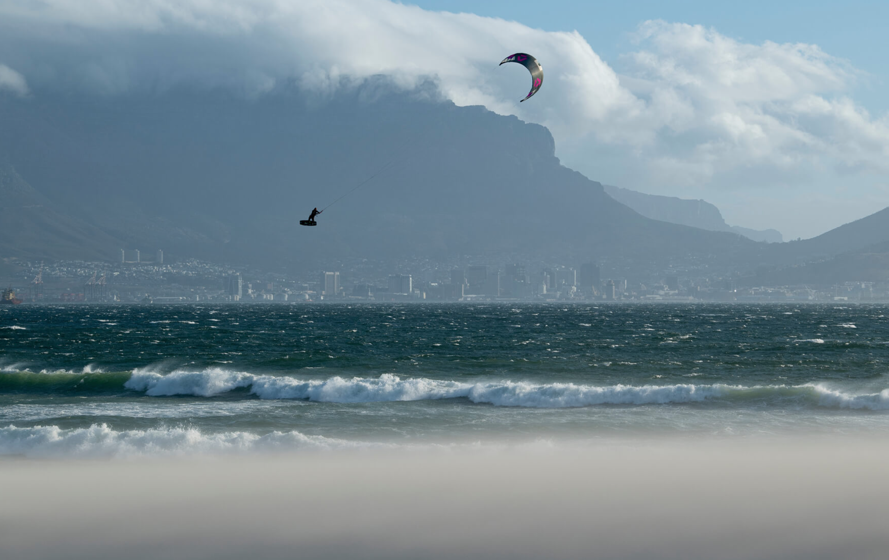

Duotone Dice 2021
FREESTYLE / WAVE
Designed for big air, powerful lift, extreme kite loops and with impressive freestyle
performance, the all-new Dice is the perfect kite for the rider who wants to go big!



KEY FEATURES
EXTREMELY POWERFUL LIFT AND MASSIVE JUMPING ABILITIES
MOST IMPORTANT FOR FREESTYLE MANOUVERS, BOOSTING, OLD-SCHOOL STYLE AND
OVERALL PERFORMANCE.
INCREDIBLY PRECISE STEERING
CRUCIAL FOR EXACT MANOUVERS AND TOTAL CONTROL AT ANY TIME.
PERFECT FOR KITE LOOPS AND UNHOOKED POP
DUE TO THE 3 DIFFERENT PIGTAILS POSITIONS THE KITE IS PERFECT FOR BOTH BIG
AIRS, LOOPING AND UNHOOKED PERFORMANCE.
OPTIMIZED CONSTRUCTION FOR REDUCED WEIGHT
EVERY SINGLE DETAIL HAS BEEN CHECKED AND WEIGHT WAS OPTIMISED TO REDUCE THE
OVERALL WEIGHT.
PULLEY LESS BRIDLE SYSTEM
THE BRIDLE SYSTEM DOESN'T NEED ANY PULLEYS, TO MAKE THE STEERING EVEN MORE
SMOOTH AND DIRECT.
SEVERAL TIP TUNING OPTIONSS
FROM FREESTYLE AND BIG AIR TO EVEN WAVE RIDING, THE DICE CAN BE TUNED IN ALL
DIRECTIONS.
DETAILS
The new Dice has been designed by Ralf Grösel with the influence of Aaron Hadlow
and
Lasse Walker. The goal was to make a kite that would compete at the very top level of the King Of The
Air,
offering huge jumps and powerful loops. At the same time, the team wanted it to perform for unhooked
tricks
too, making it a really versatile performer. This year the weight of the kite has been reduced to improve
the flying characteristics, and the bridle has been tuned a lot with the pulley less design offering a
very
precise feel. These design changes for 2021 combine modern materials with an absolutely solid frame
construction. This helps the kite to react very precise and responsive, yet being superstable in gusty or
high wind conditions. Aaron and Lasse really wanted to maximise the jumping capabilities, and the fast
turning nature makes it incredibly reactive and gives it an explosive launch off the water. By tuning the
bridle and wingtips, the turning speed was increased while ensuring the loops are full power with plenty
of
sideways pull in the air. For freestyle the Dice delivers a good amount of slack just after you pop, this
allows you to throw the latest tricks with ease. The fast nature of the handling also lends the Dice well
to
wave riding, and the reduced weight improves the drifting capabilities. If you want a really
high-performance all-round kite, then the Dice is the choice for you. No matter what the conditions it is
ready to go and when the conditions get wild, then the Dice will be there ready to help you fly!
TECH FEATURES
TRINITY TX
Teijin is the world’s leading supplier of polyester fabrics and sail materials to marine sports. The combined creative power of Duotone saw the formulation of TRINITY TX. Exclusive to Duotone, TRINITY TX is a 3x2 canopy material, which has proven to be far superior to other canopy materials in terms of durability and dynamic performance.
The 3x2 yarn combination has proven to be the best solution in performance as well as durability, overall superior to any 2x2 or 4x4 yarn solutions. TRINITY TX. Made to stand the test of time.

TRUE QUOTES
- “HAVING LESS DRAG AND WEIGHT BECAUSE OF THE NEW CONSTRUCTION MATERIALS GIVES ME MUCH MORE CONFIDENCE FOR BIG AIR KITEBOARDING. THE KITE IS MORE REACTIVE AND CATCHES YOU QUICKER AFTER THE LOOP. IT’S A GREAT IMPROVEMENT AND STEP FORWARD.”AARON HADLOW
- “THE NEW DICE STILL MY FAVORITE ALL AROUND KITE. WITH THE THINNER BRIDLES AND THE NEW LINES, THE KITE IS SIMILAR WITH LAST YEAR ONE BUT EVEN MORE DIRECT AND REATIVE, MAKING THE NEW DICE MORE PREDICTABLE. YOU CAN JUMP HIGHER, LOOP MORE AGGRESSIVE WITCH IT MEANS MORE FUN!” RENO ROMEU
- “IT’S INSANE! OVER THE LAST 2 YEARS THE DICE HAS REALLY EXCELLED IN PERFORMANCE. DUE TO THE PULLY-LESS BRIDLE AND NEW REFINEMENTS, THE 2021 DICE PERFORMS TO PUSH YOUR RIDING IN BIG AIR AND FREESTYLE AS FAR AS YOU WANT, WHILST STILL HAVING THE SMOOTH HANDELING OVERALL FEEL THE DICE HAS BECOME SO FAMOUS FOR!” LASSE WALKER